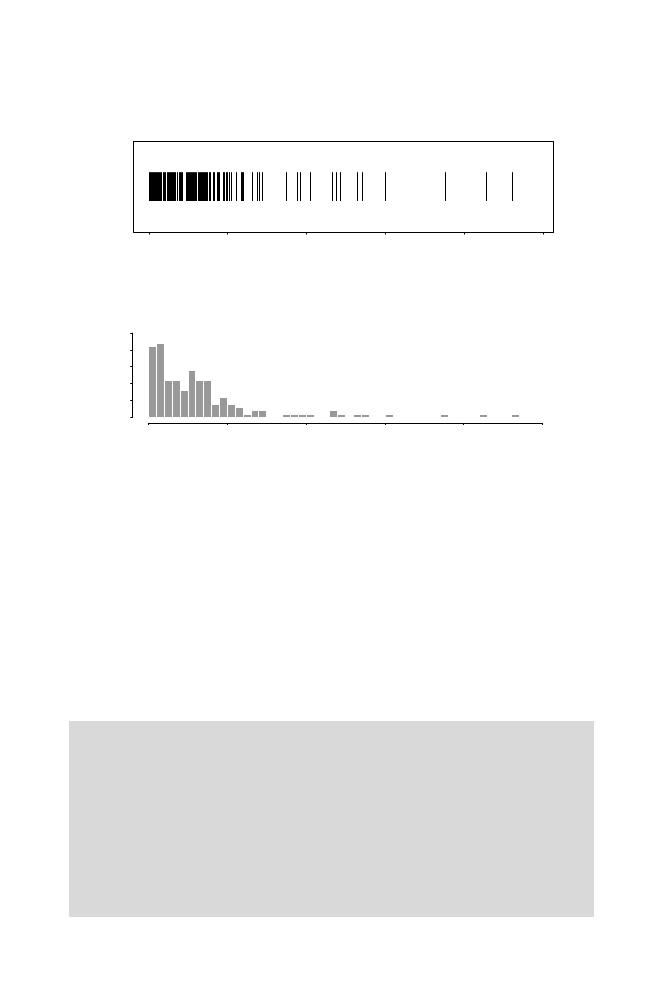

3.5 Restriction Fragment Length Distributions
85
Fragment Size
0
500
1000
1500
2000
2500
A.
0
500
1000
1500
2000
2500
Fragment Size
B.
0 5 10 15 20 25
Fig. 3.3.
Fragments produced by
Alu
I digestion of bacteriophage lambda DNA.
Panel A: Lengths of individual fragments. Panel B: Histogram of fragment sizes.
3.5.2 Simulating Restriction Fragment Lengths
In the preceding section, we showed that the restriction fragment length dis-
tribution should be approximately exponential, and we demonstrated that a
particular real example did indeed resemble this distribution. But what would
we actually see for a particular sequence conforming to the iid model? In other
words, if we
simulated
a sequence using the iid model, we could compute the
fragment sizes in this simulated sequence and visualize the result in a manner
similar to what is seen in the actual case in Fig. 3.3. The details of this
R
exercise are given in Computational Example 3.5.
Computational Example 3.5: Simulating restriction site distribu-
tions
We assume the iid model for the sequence, with uniform base probabilities
p
A
=
p
C
=
p
G
=
p
T
= 0
.
25. Comparison with the data for lambda DNA
in Table 3.1 shows that this approximation is not too bad. We generate a
sequence having 48,500 positions (close to the length of lambda DNA). As
earlier, we code the bases as follows:
A
=1,
C
=2,
G
=3, and
T
=4. The following
is the result of an
R
session simulating the sequence:
> x<-c(1:4)